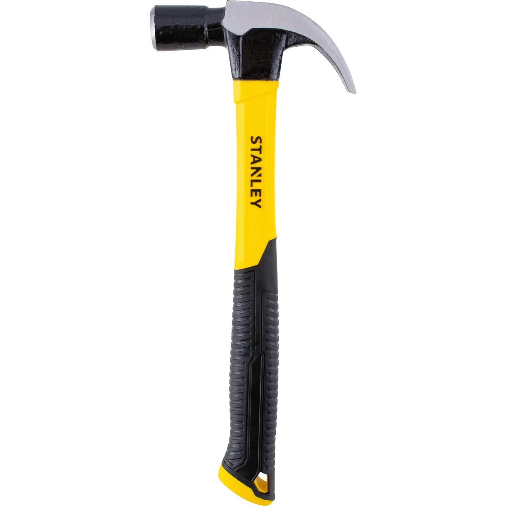

Martillo de carpintero

Herramienta con cabeza metálica y mango diseñado para transmitir impactos. Su extremo posterior puede utilizarse para extraer clavos, por lo que resulta útil en carpintería y reparaciones domésticas.